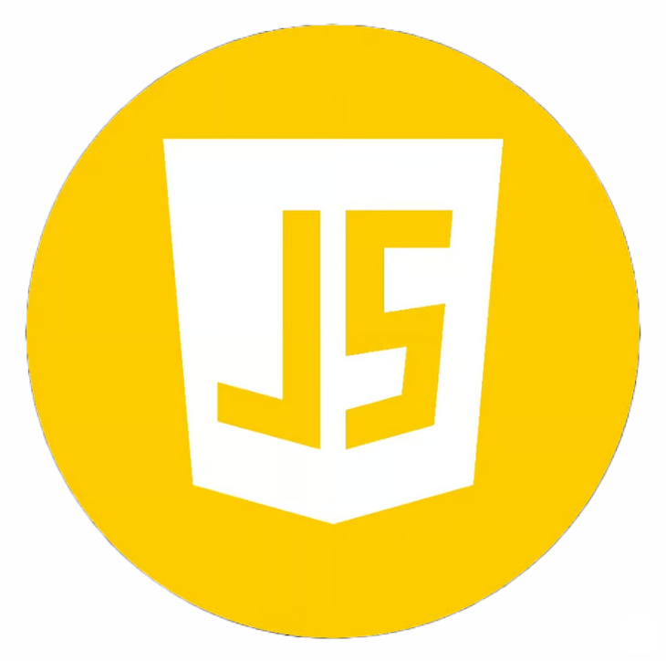
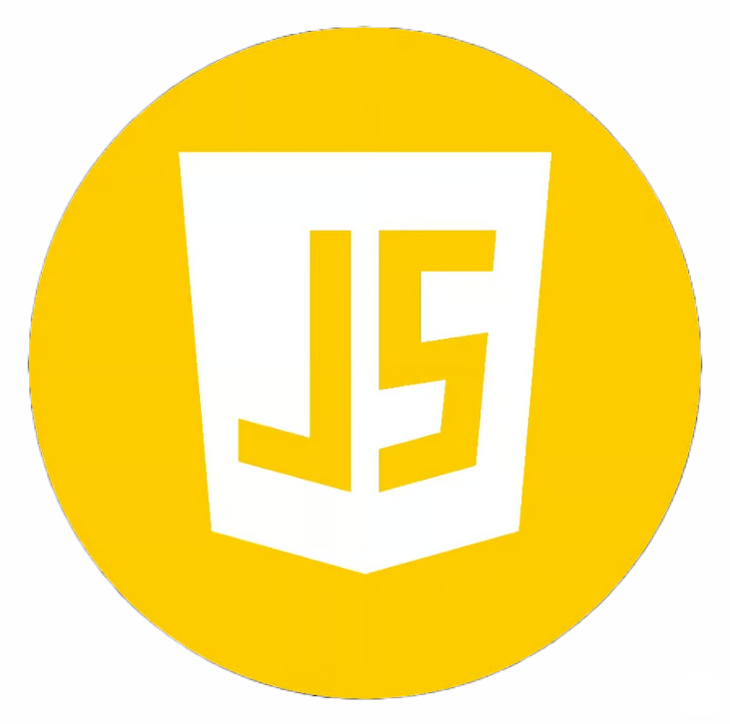

Sobre Mim
Meu nome é Guilherme Geiger, com o passar dos anos despertei um grande interesse por tecnologia, foi então que decidi trilhar o caminho da programação. Estou no último ano do ensino médio, em constante aprendizagem e apaixonado pelo universo da programação.
Hoje já entendo tecnologias como HTML, CSS, JS, NODE e GIT.